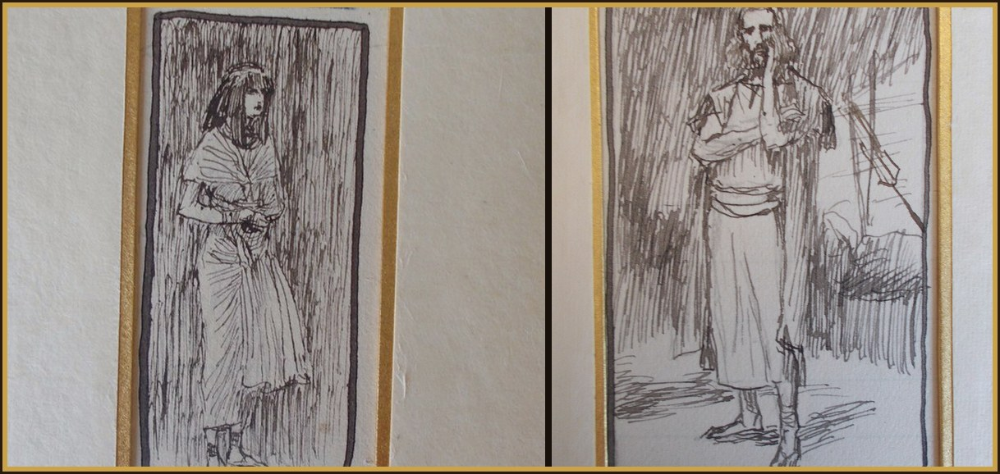

Intention the favor I place in your hands
Read Genesis 49 in the NABRE →
1Then Jacob called his sons, and he said to them: “Gather together, so that I may announce what will happen to you in the last days. 2Gather together and listen, O sons of Jacob. Listen to Israel, your father. 3Reuben, my firstborn, you are my strength and the beginning of my sorrow: first in gifts, greater in authority. 4You are being poured out like water, may you not increase. For you climbed onto your father’s bed, and you defiled his resting place. 5The brothers Simeon and Levi: vessels of iniquity waging war. 6Let not my soul go by their counsel, nor my glory be within their meeting. For in their fury they killed a man, and in their self-will they undermined a wall. 7Cursed be their fury, because it was obstinate, and their indignation, because it was harsh. I will divide them in Jacob, and I will scatter them in Israel. 8Judah, your brothers will praise you. Your hand will be at the necks of your enemies; the sons of your father will reverence you. 9Judah is a lion’s young. You have gone up to the prey, my son. While resting, you have lain like a lion. And just like a lioness, who would rouse him? 10The scepter from Judah and the leader from his thigh will not be taken away, until he who will be sent arrives, and he will be the expectation of Gentiles. 11Tying his young colt to the vineyard, and his donkey, O my son, to the vine, he will wash his robe in wine, and his cloak in the blood of the grape. 12His eyes are more beautiful than wine, and his teeth whiter than milk. 13Zebulun will live at the seashore and by the outpost of ships, reaching as far as Sidon. 14Issachar will be a strong donkey, reclining between the borders. 15He saw that rest would be good, and that the land was excellent. And so he bent his shoulder to carry, and he became a servant under tribute. 16Dan will judge his people just like any other tribe in Israel. 17Let Dan be a snake in the way, a viper in the path, biting the hooves of horses, so that his rider may fall backward. 18I will wait for your salvation, O Lord. 19Gad, being girded, will fight before him. And he himself will be girded backward. 20Asher: his bread will be fat, and he will provide delicacies to the kings. 21Naphtali is a stag sent forth, offering words of eloquent beauty. 22Joseph is a growing son, a growing son and stately to behold; the daughters run back and forth on the wall. 23But those who held darts, provoked him, and they contend with him, and they envied him. 24His bow sits in strength, and the bands of his arms and hands have been let loose by the hands of the mighty one of Jacob. From there he went forth as a pastor, the stone of Israel. 25The God of your father will be your helper, and the Almighty will bless you with the blessings of heaven above, with the blessings of the abyss that lies beneath, with the blessings of the breasts and of the womb. 26The blessings of your father are strengthened by the blessings of his fathers, until the desire of the hills of eternity shall arrive. May they be at the head of Joseph, and at the summit of the Nazarite, among his brothers. 27Benjamin is a ravenous wolf, in the morning he will eat the prey, and in the evening he will divide the spoil.”

_for_Brunoff_090_Joseph.jpg){kind=link}
_for_Brunoff_046_Jacob.jpg){kind=link}
28All these are the twelve tribes of Israel. These things their father spoke to them, and he blessed each one with their proper blessings. 29And he instructed them, saying: “I am being gathered to my people. Bury me with my fathers in the double cave, which is in the field of Ephron the Hittite, 30opposite Mamre, in the land of Canaan, which Abraham bought, along with its field, from Ephron the Hittite, as a possession for burial. 31There they buried him, with his wife Sarah.” And there Isaac was buried with his wife Rebekah. There also Leah lies preserved. 32And having finished these commands by which he instructed his sons, he drew his feet onto the bed, and he passed away. And he was gathered to his people.
Jacob tells his sons what will happen in the last days, and the words are not all kind. Reuben is poured out like water. Simeon and Levi are divided for their violence. Judah keeps the scepter until the one who will be sent arrives, the expectation of the nations. Then Jacob asks to be buried in the cave with Abraham and Sarah, Isaac and Rebekah, and Leah. A true word about the family can still carry the promise forward.
- Which word about your life have you wanted to skip because it is not the kind part?
- What do you need to be buried with — the people and the place the promise already named?
The First Joyful Mystery - The Annunciation
Fruit: Humility · Luke 1:26
Sweet Mother Mary,
meditating on the Mystery of the Annunciation, when the angel Gabriel appeared to you with the news that you were to become the Mother of God. He greeted you with that sublime salutation, “Hail, full of grace! The Lord is with thee!” and you did humbly submit yourself to the will of the Father, responding: “Behold the handmaid of the Lord. Be it done unto me according to thy word,”
The Second Joyful Mystery - The Visitation
Fruit: Charity Towards My Neighbor · Luke 1:39
Sweet Mother Mary,
meditating on the Mystery of the Visitation, when, upon your visit to your holy cousin, Elizabeth, she greeted you with the prophetic utterance, “Blessed art thou among women, and blessed is the fruit of thy womb!” and you answered with that canticle of canticles, the Magnificat,
The Third Joyful Mystery - The Nativity
Fruit: Detachment From The World · Luke 2:1
Sweet Mother Mary,
meditating on the Mystery of the Nativity of Our Lord, when, your time being completed, you brought forth, O holy Virgin, the redeemer of the world in a stable at Bethlehem; whereupon choirs of angels filled the Heavens with their exultant song of praise – “Glory to God in the highest, and on Earth peace to people of good will,”
The Fourth Joyful Mystery - The Presentation
Fruit: Purity · Luke 2:22
Sweet Mother Mary,
meditating on the Mystery of the Presentation, when, in obedience to the Law of Moses, you presented the Child in the temple, where the holy prophet Simeon, taking the Child in his arms, offered thanks to God for allowing him to look upon his Saviour,
The Fifth Joyful Mystery - The Finding of the Child Jesus in the Temple
Fruit: True Wisdom · Luke 2:41
Sweet Mother Mary,
meditating on the Mystery of the Finding of the Child Jesus in the Temple, when, having sought Him for three days, distressed and anxious at His absence, your heart was gladdened when you found Him in the temple speaking to the doctors; and upon your request, He obediently returned home,
The Thanksgiving Prayer
Hail! Queen of the Most Holy Rosary, my Mother Mary, hail! At your feet I humbly pray and offer you a crown of snow-white roses, to remind you of your joys. Each ten bound together, recalling to you a joyful mystery, with my petition for a particular grace. O Holy Queen, dispenser of God’s graces and mother of all who invoke your holy name. Do not look upon my gift and fail to see its binding. As you graciously receive my gift, I kindly implore you to receive my thanksgiving; from your bounty you have granted me the favor I so trustingly sought. I despaired not of what I ask of thee, and thou has truly shown thyself my Mother!
Prayer in Thanksgiving
Sweet Mother Mary, I offer you this Spiritual Communion to bind my bouquets in a wreath to place upon your brow in thanksgiving for the favor I place in your hands.
Day 8
Close your eyes and let yourself be carried away on the flowing current of my grace; close your eyes and do not think of the present, turning your thoughts away from the future just as you would from temptation. Repose in me, believing in my goodness, and I promise you by my love that if you say, “You take care of it,” I will take care of it all; I will console you, liberate you and guide you.
Ten times
O Jesus, I surrender myself to you, take care of everything!
To Our Lady
Mother, I am yours now and forever. Through you and with you I always want to belong completely to Jesus.